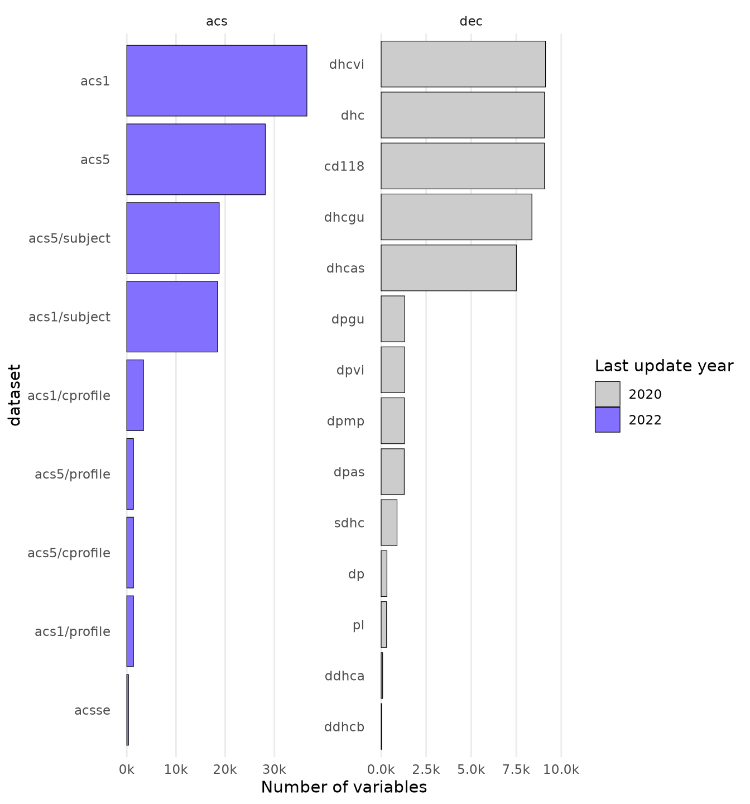
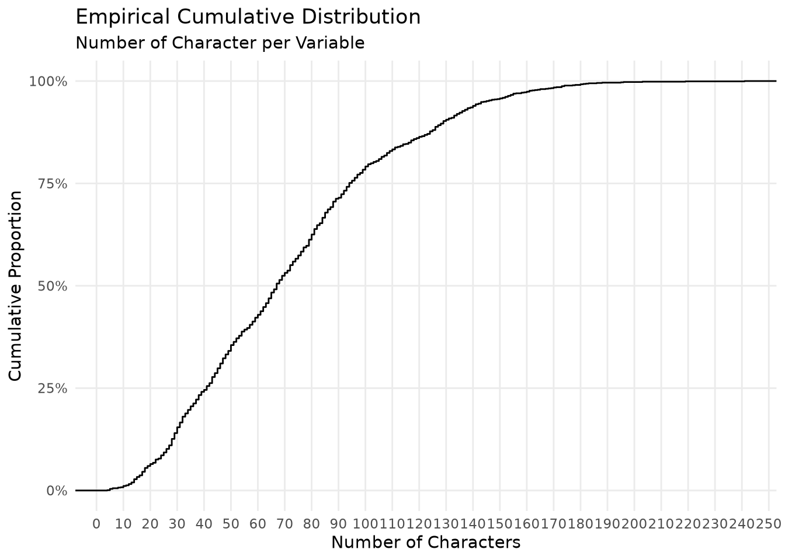
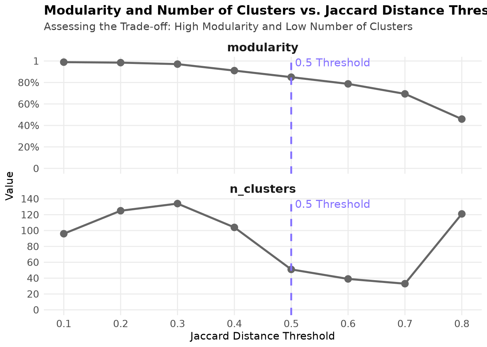
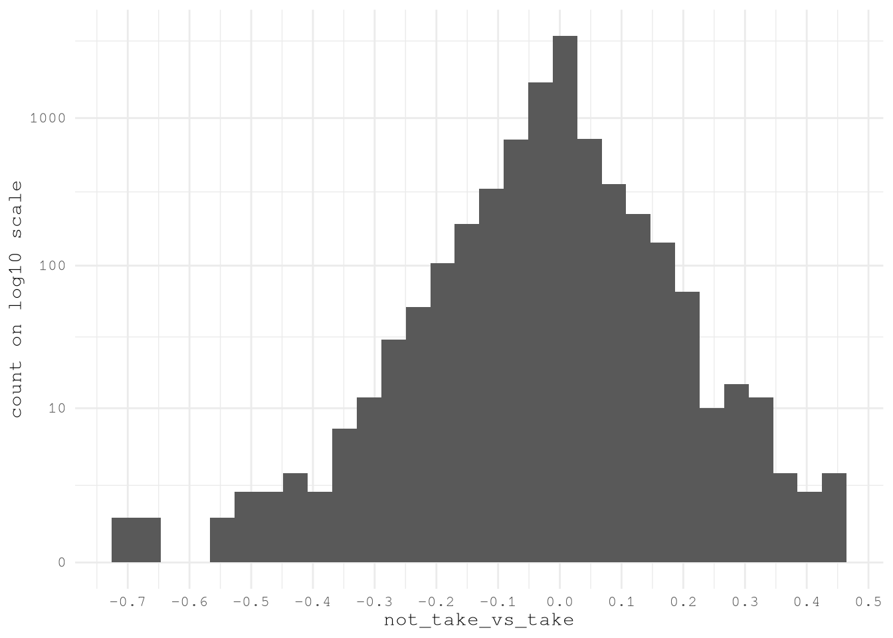

## To manage relative paths
library(here)
## To transform data that fits in RAM
library(data.table)
## Publish data sets, models, and other R objects
library(pins)
library(qs2)
## To work with spatial data
library(sf)
# To work and plot graphs
library(tidytext)
library(stringdist)
library(hashr)
library(igraph)
# Access to US Census Bureau datasets
library(tidycensus)
## To create general plots
library(ggplot2)
library(scales)
## To create table
library(gt)
## Custom functions
devtools::load_all()
# Defining the pin boards to use
BoardLocal <- board_folder(here("../NycTaxiPins/Board"))
# Loading params
Params <- yaml::read_yaml(here("params.yml"))
Params$BoroughColors <- unlist(Params$BoroughColors)Expanding Transportation and Socioeconomic Patterns
Expanding on the previous post’s geospatial feature extraction, this article will delve into enriching our understanding of NYC taxi zones with socioeconomic and transportation-related data from the US Census Bureau. This new layer of information will provide crucial context for analyzing take_current_trip by revealing underlying community characteristics and commuting behaviors within each zone.
Here are the steps to follow:
Importing training data with zone shapes.
Import Census data:
- Identify relevant variables.
- Download data for Manhattan, Queens and Brooklyn with geometry.
Spatially join ACS data to taxi zones:
- Perform spatial joins to aggregate census tract data to the taxi zone level.
- Address overlapping and partially contained tracts.
Extract new features:
- Calculate proportions, averages, and densities of the ACS variables for each taxi zone.
Validation:
- Integrate new features with existing data and
take_current_trip. - Define the correlation between new predictors and
take_current_trip.
- Integrate new features with existing data and
Setting up the environment
Loading packages
Computational Performance
The geospatial processing operations in this document are computationally intensive. Although they could benefit from parallelization with packages like future and future.apply, we’ve opted for a sequential approach with caching via qs2 to maximize reproducibility and maintain code simplicity. Intermediate results are saved after each costly operation to avoid unnecessary recalculations during iterative development.
Importing training data with zone shapes
Details on how this data was obtained can be found in the Data Collection Process.
ZonesShapes <-
pin_read(BoardLocal, "ZonesShapes") |>
(\(df) {
df[df[["borough"]] %chin% names(Params$BoroughColors), c("OBJECTID", "LocationID")]
})() |>
st_cast(to = "MULTIPOLYGON")
SampledData <-
pin_list(BoardLocal) |>
grep(pattern = "^OneMonthData", value = TRUE) |>
sort() |>
head(12L) |>
lapply(FUN = pin_read, board = BoardLocal) |>
rbindlist() |>
subset(
select = c("trip_id", "PULocationID", "DOLocationID", "take_current_trip")
)Import Census data
Identify relevant variables
Based on the tidycensus documentation we have the below tables available for exploration.
ValidTables = c(
"sf1",
"sf2",
"sf3",
"sf4",
"pl",
"dhc",
"dp",
"ddhca",
"ddhcb",
"sdhc",
"as",
"gu",
"mp",
"vi",
"acsse",
"dpas",
"dpgu",
"dpmp",
"dpvi",
"dhcvi",
"dhcgu",
"dhcvi",
"dhcas",
"acs1",
"acs3",
"acs5",
"acs1/profile",
"acs3/profile",
"acs5/profile",
"acs1/subject",
"acs3/subject",
"acs5/subject",
"acs1/cprofile",
"acs5/cprofile",
"sf2profile",
"sf3profile",
"sf4profile",
"aian",
"aianprofile",
"cd110h",
"cd110s",
"cd110hprofile",
"cd110sprofile",
"sldh",
"slds",
"sldhprofile",
"sldsprofile",
"cqr",
"cd113",
"cd113profile",
"cd115",
"cd115profile",
"cd116",
"plnat",
"cd118"
)
length(ValidTables)[1] 55That means that we have a lot a data to use, but to be able to get the list of variables available for each table we need to know the different year when each table was updated. In our particular case, we only know the last year when each table was updated from 2020 to 2020.
To solve that question, we only need to scrap the table available in https://api.census.gov/data.html and apply our particular selection to that huge table.
CensusTables <-
rvest::read_html("https://api.census.gov/data.html") |>
rvest::html_table() |>
(\(x) x[[1L]])() |>
as.data.table() |>
subset(
!is.na(`API Base URL`) & Vintage != "N/A",
select = c(
"Title",
"Description",
"Vintage",
"Dataset Type",
"Dataset Name",
"API Base URL"
)
)
CensusTables[, `:=`(
Vintage = as.integer(Vintage),
`Dataset Name` = gsub("› ", "/", `Dataset Name`)
)]
CensusTables[, `:=`(
survey = fcase(
`Dataset Name` %like% "^dec",
"dec",
`Dataset Name` %like% "^acs",
"acs"
),
`Dataset Name` = gsub("(dec|acs)/", "", `Dataset Name`)
)]
setorder(CensusTables, -Vintage)
ValidTablesYears <-
CensusTables[
Vintage %between% c(2020, 2022)
][
ValidTables,
on = "Dataset Name",
nomatch = NULL,
unique(.SD, by = "Dataset Name"),
.SDcols = c("Vintage", "Dataset Name", "survey")
]
BoardLocal |> pin_write(ValidTablesYears, "ValidTablesYears", type = "qs2")
ValidTablesYears[, head(.SD, 5), by = "survey"] survey Vintage Dataset Name
<char> <int> <char>
1: dec 2020 pl
2: dec 2020 dhc
3: dec 2020 dp
4: dec 2020 ddhca
5: dec 2020 ddhcb
6: acs 2022 acsse
7: acs 2022 acs1
8: acs 2022 acs5
9: acs 2022 acs1/profile
10: acs 2022 acs5/profileNow that we have the years related to each table, let’s apply tidycensus::load_variables for each table and year to see the variables to explore.
get_all_data = function(x, ref_df) {
imported_data =
load_variables(ref_df$Vintage[x], ref_df$`Dataset Name`[x])
setDT(imported_data)
imported_data[, `:=`(
year = ref_df$Vintage[x],
dataset = ref_df$`Dataset Name`[x],
survey = ref_df$survey[x]
)]
return(imported_data)
}
ValidTablesLastYear <-
lapply(
seq_along(ValidTablesYears$`Dataset Name`),
get_all_data,
ref_df = ValidTablesYears
) |>
rbindlist(use.names = TRUE, fill = TRUE)
BoardLocal |> pin_write(ValidTablesLastYear, "ValidTablesLastYear", type = "qs2")
nrow(ValidTablesLastYear) |> comma()[1] "159,721"After making that exploration we can see that we have almost 160K variables to explore.
To understand what have we have let’s plot the number of variables by dataset and survey for each year.
Show the code
VariablesPerDataset <-
ValidTablesLastYear[, .N, .(year = factor(year), dataset, survey)][,
dataset := reorder(dataset, N, FUN = sum)
]
ggplot(VariablesPerDataset) +
geom_col(aes(N, dataset, fill = year), color = "black", linewidth = 0.2) +
scale_fill_manual(values = c("2022" = Params$ColorHighlight, "2020" = Params$ColorGray)) +
scale_x_continuous(
labels = scales::label_comma(scale = 1 / 1000, suffix = "k")
) +
expand_limits(x = 1e4) +
labs(x = "Number of variables", fill = "Last update year") +
facet_wrap(vars(survey), scale = "free") +
theme_minimal(base_family = Params$BaseFontFamily) +
theme(
panel.grid.minor = element_blank(),
panel.grid.major.y = element_blank()
)
It’s clear that there is one way we can read the variables one by one and hypothesize the variables to select. Instead, we are going to flow some steps to reduce the number of variable and the classify them in to groups to select.
Just by looking to the raw data, I found that many variables measure the same thing for particular groups based on:
- Race
- Place of Birth
- Sex
VariablesToIgnore <- c(
"Hispanic",
"Latino",
"American Indian",
"Alaska Native",
"White",
"Black",
"African American",
"Asian",
"Native Hawaiian",
"Pacific Islander",
"Races?",
"Ancestry",
"Nativity",
"Citizenship Status",
"Place of Birth",
"Naturalization",
"Current Residence",
"Male",
"Female",
"Women",
"Men"
)As we will join the data based on geography it doesn’t make sense to have predictors based on the situations of those particular groups as we won’t have does details of passengers of the trips.
ConceptsToExplore <-
ValidTablesLastYear[
!concept %ilike% paste(VariablesToIgnore, collapse = "|") &
!label %ilike% "Male|Female",
.(concept = unique(concept))
]
nrow(ConceptsToExplore)[1] 1270Another aspect we found out by exploring the data it’s that some variables names are really long and the long the concept definition the more specific the variable and less useful for our model. For example, below we can see the variable with the longer number of characters:
GRANDPARENTS LIVING WITH OWN GRANDCHILDREN UNDER 18 YEARS BY RESPONSIBILITY FOR OWN GRANDCHILDREN BY LENGTH OF TIME RESPONSIBLE FOR GRANDCHILDREN FOR THE POPULATION 30 YEARS AND OVER IN HOUSEHOLDS (EXCLUDING PEOPLE IN MILITARY HOUSING UNITS)
- Population Measured:
- Grandparents living with own grandchildren under 18 years
- 30 years and over
- In households (excluding military housing units)
- Data Categories:
- By responsibility for own grandchildren
- By length of time responsible for grandchildren
By exploring the cumulative distribution we can see that near 50% of the variable present less 70 characters per variable which seems the better group to focus the exploration
Show the code
ConceptsToExplore[, concept_length := nchar(concept)]
ggplot(ConceptsToExplore) +
stat_ecdf(aes(concept_length)) +
scale_x_continuous(breaks = breaks_width(10)) +
scale_y_continuous(labels = label_percent(accuracy = 1)) +
labs(
title = "Empirical Cumulative Distribution",
subtitle = "Number of Character per Variable",
x = "Number of Characters",
y = "Cumulative Proportion"
) +
theme_minimal(base_family = Params$BaseFontFamily) +
theme(panel.grid.minor = element_blank())
After applying that change we only have 675 pending variables to explore the classify.
ConceptsToExploreMaxConceptLength <- 70
ConceptsToExploreValidConceptLength <-
ConceptsToExplore[concept_length <= ConceptsToExploreMaxConceptLength]
ConceptsToExploreValidConceptLength[, .N][1] 675To confirm if that action make sense we can print the longer variables and confirm that aren’t too specific.
GROUP QUARTERS POPULATION IN NONINSTITUTIONAL FACILITIES BY SEX BY AGEClass of Worker for the Civilian Employed Population 16 Years and OverAGGREGATE INCOME DEFICIT IN 2019 (DOLLARS) FOR FAMILIES BY FAMILY TYPEAGGREGATE NUMBER OF ROOMS BY TENURE (EXCLUDING MILITARY HOUSING UNITS)Sex by Industry for the Civilian Employed Population 16 Years and OverPoverty Status in the Past 12 Months of Individuals by Work Experience
Now we can calculate the pairwise Jaccard string distances of each of the variables to identify conceptually similar terms based on similar words to then identify variable clusters to select.
- Create word-level hash tokens (not character-level) after case normalization.
ConceptsToExploreHash <-
tolower(ConceptsToExploreValidConceptLength$concept) |>
strsplit("\\s+") |>
hash()- Compute pairwise Jaccard distances between hashed word representations.
ConceptsToExploreWordDistance <-
seq_distmatrix(
ConceptsToExploreHash,
ConceptsToExploreHash,
method = "jaccard",
q = 1
)- Assign concept names to matrix dimensions for interpretability.
rownames(
ConceptsToExploreWordDistance
) <- ConceptsToExploreValidConceptLength$concept
colnames(
ConceptsToExploreWordDistance
) <- ConceptsToExploreValidConceptLength$concept- Transform symmetric matrix to long format, eliminating redundant pairwise comparisons.
ConceptsToExploreWordDistance[upper.tri(
ConceptsToExploreWordDistance,
diag = TRUE
)] <- NA
ConceptsToExploreWordDistanceDt <-
as.data.table(
ConceptsToExploreWordDistance,
keep.rownames = "Variable Name 1"
) |>
melt(
id.vars = "Variable Name 1",
variable.name = "Variable Name 2",
variable.factor = FALSE,
value.name = "Jaccard Distance",
na.rm = TRUE
)With this inter-concept distance we can use the edge_betweenness argoritm to define the cluster to use. But as the result for this method will change depending the min Jaccard Distance selected to do the analysis, we need to explore several options before taking a final decision.
define_clusters_by_distance <- function(min_jaccard_distance, dt) {
dt_filtered = dt[`Jaccard Distance` <= min_jaccard_distance]
temp_graph =
graph_from_data_frame(dt_filtered, directed = FALSE)
temp_cluster = cluster_edge_betweenness(temp_graph)
node_results = data.table(
node = V(temp_graph)$name,
cluster = temp_cluster$membership,
`Jaccard Distance Threshold` = min_jaccard_distance,
modularity = max(temp_cluster$modularity),
n_clusters = max(temp_cluster$membership)
)
return(node_results)
}
ConceptsToExploreByDistance <-
lapply(
seq(0.1, 0.8, by = 0.10),
FUN = define_clusters_by_distance,
dt = ConceptsToExploreWordDistanceDt
) |>
rbindlist()
BoardLocal |> pin_write(ConceptsToExploreByDistance, "ConceptsToExploreByDistance", type = "qs2")After exploring several configurations we can see that that the as we expand the limit of Jaccard Distance the modularity decrease, but the number of clusters initially increases (peaking around 0.3) and then steadily decreases until 0.7, after which it increases sharply again.
Show the code
ConceptsToExploreByDistance[,
unique(.SD),
.SDcols = c("Jaccard Distance Threshold", "modularity", "n_clusters")
] |>
melt(
id.vars = "Jaccard Distance Threshold",
variable.name = "cluster_metric"
) |>
ggplot(aes(`Jaccard Distance Threshold`, value)) +
geom_line(linewidth = 1, color = "gray40") +
geom_point(size = 3, color = "gray40") +
geom_vline(
xintercept = 0.5,
linetype = "dashed",
color = Params$ColorHighlight,
linewidth = 0.9
) +
# Add the annotation here
annotate(
"text",
x = 0.5,
y = Inf,
label = "0.5 Threshold",
color = Params$ColorHighlight,
vjust = 1.2,
hjust = -0.05,
size = 4
) +
scale_y_continuous(
labels = \(x) {
fifelse(x <= 1 & x > 0, label_percent()(x), label_comma(accuracy = 1)(x))
},
breaks = breaks_pretty(7)
) +
scale_x_continuous(breaks = breaks_width(0.10)) +
expand_limits(y = 0) +
facet_wrap(
vars(cluster_metric),
scale = "free_y",
ncol = 1L,
strip.position = "top"
) +
labs(
title = "Modularity and Number of Clusters vs. Jaccard Distance Threshold",
subtitle = "Assessing the Trade-off: High Modularity and Low Number of Clusters",
x = "Jaccard Distance Threshold",
y = "Value"
) +
theme_minimal(base_family = Params$BaseFontFamily) +
theme(
panel.grid.minor = element_blank(),
legend.position = "none",
plot.title = element_text(face = "bold"),
plot.subtitle = element_text(color = "gray25"),
strip.text = element_text(size = 12, face = "bold"),
axis.text = element_text(size = 10)
)
Based on this information the best threshold is 0.5 Jaccard Distance as the modularity is higher than 0.8 and the algorithm found less than 60 clusters. After than point the slope to reduce the number of clusters gets lower as concurrence, we don’t see worthy to keep increasing the threshold.
ConceptsToExploreClusters <-
ConceptsToExploreByDistance[.(0.5), on = "Jaccard Distance Threshold"]To understand what kind of variables we have in each cluster lets use the statistic tf-idf to list the top 5 words (after removing stop words) of each cluster and use that reference to select the must meaningful ones for this context.
CustomStopWords <- c(
stop_words[stop_words$lexicon == "snowball", c("word")][[1]],
"estimate",
"estimates",
"percent",
"months",
"past",
"detailed",
"type",
"types",
"current",
"adjusted",
"united",
"round",
"selected",
"median",
"level",
NA_character_
)
TopWordsByCluster <-
ConceptsToExploreClusters[, .(
cluster,
concept_lower = tolower(node)
)][, unnest_tokens(.SD, word, concept_lower)][
!word %chin% CustomStopWords & !word %like% "^\\d+$",
.N,
by = c("cluster", "word")
][, dataset_total := sum(N), by = "cluster"][, bind_tf_idf(
.SD,
word,
cluster,
N
)][order(-tf_idf)][,
.(
`Top Words` = head(word, 5L) |>
stringr::str_to_sentence() |>
paste0(collapse = ", ")
),
keyby = "cluster"
][
ConceptsToExploreClusters,
on = "cluster",
j = .(`Node Count` = .N),
by = c("Top Words", "cluster")
][
order(-`Node Count`, cluster),
.(`Cluster ID` = cluster, `Top Words`, `Node Count`)
]Show the code
gt(TopWordsByCluster) |>
# Apply visual styling
tab_header(
title = "Key Variable Clusters from Census Data Analysis",
subtitle = "Top representative words and cluster sizes for socioeconomic & transportation patterns"
) |>
tab_style(
style = cell_text(color = "white", weight = "bold"),
locations = cells_title()
) |>
tab_style(
style = cell_fill(color = "#2c3e50"),
locations = cells_title()
) |>
data_color(
columns = `Node Count`,
fn = scales::col_numeric(
palette = c("white", Params$ColorHighlightLow, Params$ColorHighlight),
domain = c(0, max(TopWordsByCluster$`Node Count`))
)
) |>
fmt_number(
columns = `Node Count`,
decimals = 0
) |>
cols_align(
align = "left",
columns = `Top Words`
) |>
cols_label(
`Cluster ID` = "CLUSTER",
`Top Words` = "TOP REPRESENTATIVE TERMS",
`Node Count` = "# VARIABLES"
) |>
tab_options(
table.font.names = "Arial",
table.background.color = "white",
column_labels.font.weight = "bold",
column_labels.background.color = "#f8f9fa",
row_group.background.color = "#f1f3f5",
#row.striping.include_table_body = TRUE,
quarto.disable_processing = TRUE
) |>
tab_source_note(
source_note = "Clusters identified through NLP analysis of US Census variable concepts"
)| Key Variable Clusters from Census Data Analysis | ||
| Top representative words and cluster sizes for socioeconomic & transportation patterns | ||
| CLUSTER | TOP REPRESENTATIVE TERMS | # VARIABLES |
|---|---|---|
| 23 | Excluding, Military, Units, Housing, Water | 81 |
| 4 | Structure, Householder, Built, Tenure, Year | 55 |
| 12 | Health, Insurance, Age, Sex, Coverage | 52 |
| 21 | Rent, Quartile, Dollars, Contract, Gross | 39 |
| 2 | Quarters, Group, Population, Age, Sex | 36 |
| 10 | Status, Mortgage, Vacancy, Owner, Monthly | 32 |
| 13 | Population, Years, Civilian, Employed, Age | 32 |
| 18 | Work, Transportation, Means, Time, Workplace | 32 |
| 20 | Poverty, Status, Ratio, Families, Household | 23 |
| 3 | Household, Size, Including, Categories, Alone | 20 |
| 28 | Number, Rooms, Tenure, Available, Vehicles | 19 |
| 36 | Households, Income, Earnings, Dollars, Security | 19 |
| 6 | Income, Dollars, Household, Nonfamily, Family | 18 |
| 7 | Children, Presence, Years, Family, Age | 18 |
| 25 | Characteristics, Social, Comparative, Puerto, Rico | 17 |
| 26 | Allocation, Rooms, Relationship, Bedrooms, Value | 16 |
| 5 | Moved, Unit, Householder, Year, Tenure | 13 |
| 31 | Available, Vehicles, Allocation, Telephone, Service | 6 |
| 32 | Internet, Household, Subscription, Access, Computer | 6 |
| 44 | Occupied, Housing, Facilities, Units, Plumbing | 6 |
| 24 | Subscriptions, Internet, Presence, Household, Computers | 5 |
| 1 | Occupancy, Status, Bedrooms, Structure | 4 |
| 9 | Tenure, Universe, Housing | 4 |
| 15 | Coupled, Households | 4 |
| 46 | Monthly, Costs, Electricity, Gas, Housing | 4 |
| 49 | Years, Population, States, Puerto, Rico | 4 |
| 11 | Total, Occupied, Population, Units, Housing | 3 |
| 14 | Multigenerational, Presence, Households, Nonrelatives | 3 |
| 22 | Value, Housing | 3 |
| 30 | Percentage, Gross, Rent, Income, Household | 3 |
| 37 | Subfamilies, Subfamily, Population, Relationship | 3 |
| 43 | House, Heating, Fuel, Tenure, Allocation | 3 |
| 45 | Meals, Included, Rent, Householder, Kitchen | 3 |
| 8 | Units, Housing | 2 |
| 16 | Average, Occupied, Size, Units, Housing | 2 |
| 17 | Geographical, Mobility, Year, States, Puerto | 2 |
| 19 | Language, Household | 2 |
| 27 | Rooms | 2 |
| 29 | Bedrooms | 2 |
| 33 | Reason, Moving, People, Primary, Households | 2 |
| 34 | Stamp, Benefits, Food, Snap, Households | 2 |
| 35 | Years, Workers, Vehicle, Households, Private | 2 |
| 38 | Limits, Quintile, Upper, Income, Household | 2 |
| 39 | Quintiles, Mean, Income, Household | 2 |
| 40 | Shares, Quintile, Income, Aggregate, Household | 2 |
| 41 | Gini, Index, Inequality, Income | 2 |
| 42 | Place, Work, Workers, State, County | 2 |
| 47 | Computers, Household | 2 |
| 48 | Overall, Characteristic, Rate, Person, Unit | 2 |
| 50 | Spoken, Home, Language, Characteristics, People | 2 |
| 51 | Financial, Mortgage, Characteristics, Without, Units | 2 |
| Clusters identified through NLP analysis of US Census variable concepts | ||
Based on the analysis, the following clusters are selected for inclusion due to their direct relevance to transportation behavior, income patterns, and population density - key factors influencing taxi demand (take_current_trip):
| Cluster ID | Top Words | Node Count | Reason for Inclusion |
|---|---|---|---|
| 18 | Work, Transportation, Means, Time, Workplace | 32 | Direct commuting behavior - primary driver of taxi demand patterns |
| 13 | Population, Years, Civilian, Employed, Age | 32 | Employment density - correlates with business/event-related trips |
| 36 | Households, Income, Earnings, Dollars, Security | 19 | Income capacity - strongest predictor of taxi affordability and usage frequency |
ConceptsToExploreCleanConcept <-
ConceptsToExploreClusters[
.(c(18, 13, 36)),
on = "cluster",
.(concept = stringr::str_to_sentence(node), cluster)
]
ConceptByDataset <-
ValidTablesLastYear[, .(
concept = stringr::str_to_sentence(concept),
year,
dataset,
survey
)][, unique(.SD)]
ConceptByDatasetToExplore <-
ConceptByDataset[ConceptsToExploreCleanConcept, on = "concept"]Checking the data we can see that some concept are duplicated in some in some datasets, as we can see in the next table.
Show the code
ConceptByDatasetToExplore[,
.(N = .N, dataset = sort(dataset) |> paste(collapse = ", ")),
by = "concept"
][N > 1, .(variables = .N), keyby = "dataset"] |>
gt() |>
# Header
tab_header(
title = md("**Dataset Variable Analysis**"),
subtitle = "Distribution of shared variables across survey datasets"
) |>
# Col Names
cols_label(
dataset = "Dataset Collection",
variables = "Number of Variables"
) |>
# Number Format
fmt_number(columns = variables, decimals = 0) |>
# Colors
data_color(
columns = variables,
colors = scales::col_numeric(
palette = c("white", Params$ColorHighlightLow, Params$ColorHighlight),
domain = NULL
)
) |>
tab_style(
style = cell_text(color = "white", weight = "bold"),
locations = cells_title()
) |>
tab_style(
style = cell_fill(color = "#2c3e50"),
locations = cells_title()
) |>
# Options
tab_options(
table.font.names = "Arial",
table.background.color = "white",
column_labels.font.weight = "bold",
column_labels.background.color = "#f8f9fa",
row_group.background.color = "#f1f3f5",
#row.striping.include_table_body = TRUE,
quarto.disable_processing = TRUE
)| Dataset Variable Analysis | |
| Distribution of shared variables across survey datasets | |
| Dataset Collection | Number of Variables |
|---|---|
| acs1, acs5 | 48 |
| acs1, acs5, acsse | 3 |
| acs1/subject, acs5/subject | 5 |
| cd118, dhc | 2 |
| cd118, dhc, dhcas, dhcgu, dhcvi | 3 |
| dhcas, dhcgu, dhcvi | 2 |
| dhcas, dhcgu, dhcvi, sdhc | 1 |
| dhcas, dhcvi | 11 |
We can see that we have 2 main groups of cases:
- Variables shared between acs1 (subject) and acs5 (subject).
- Variables shared between datasets of the decennial US Census.
By reading about the differences between each datasets, we are going to focus in the variables available for the next datasets:
acs5 and acs5/subject
- We are going to train the model based on one year data but we want to be able to find patterns that remain for future years as our testing data have trips for 2025 we expect that the model keep working after that year.
dhc
- We are exploring only NYC so won’t need information from indepent island and as result the information provided by those datasets won’t be relevant for our training goal.
ConceptByValidDatasetToExplore <-
ConceptByDatasetToExplore[
c("acs5", "acs5/subject", "dhc"),
on = "dataset",
.(dataset, concept, cluster)
]Now we are ready to identify the particular codes (names) related to each variable concept. In this step are going to exclude variables that:
- Only provide information based on sex with the exception of
B08013_001which provide information about “travel time to work (in minutes) of workers”. - Don’t have information at tract level of geography.
ValidTablesLastYear[, concept := stringr::str_to_sentence(concept)]
VariablesToUse <-
ValidTablesLastYear[
ConceptByValidDatasetToExplore,
on = c("dataset", "concept")
# Only provide information based on sex
][!label %ilike% "Male|Female"][, concept_count := .N, by = "concept"][
name == "B08013_001" | concept_count > 2L
# Don't have information at tract
][fcoalesce(geography, "") != "county"]
VariablesToUse[, .(N = comma(.N)), by = c("survey", "year")] survey year N
<char> <int> <char>
1: acs 2022 1,382
2: dec 2020 51Download data for Manhattan, Queens and Brooklyn with geometry
After defining the variables to use we only need to define the queries to get the data from the API with {tidycensus} for the American Community Survey (ACS) and Decennial US Census (DEC).
Note
As we are getting also the geometry information is much efficient to change the output argument default from “tidy” to “wide” to avoid having a list column repeating the same geometries over and over after applying the function tidyr::gather.
This will make the spatial join independent to the number of variables to query.
AcsVariableTracts <-
get_acs(
geography = "tract",
variables = VariablesToUse["acs", on = "survey", name],
year = 2022,
state = "NY",
# Manhattan, Brooklyn, Queens
county = c("New York", "Kings", "Queens"),
geometry = TRUE,
survey = "acs5",
output = "wide"
) |>
st_transform(crs = st_crs(ZonesShapes)$epsg)
DecVariableTracts <-
get_decennial(
geography = "tract",
variables = VariablesToUse["dec", on = "survey", name],
sumfile = "dhc",
year = 2020,
state = "NY",
# Manhattan, Brooklyn, Queens
county = c("New York", "Kings", "Queens"),
geometry = TRUE,
output = "wide"
) |>
st_transform(crs = st_crs(ZonesShapes)$epsg)
BoardLocal |> pin_write(AcsVariableTracts, "AcsVariableTracts", type = "qs2")
BoardLocal |> pin_write(DecVariableTracts, "DecVariableTracts", type = "qs2")To it’s the perfect time to join all variables into one table.
ConsolidatedVariableTracts <-
dplyr::full_join(
AcsVariableTracts,
st_drop_geometry(DecVariableTracts),
by = c("GEOID", "NAME")
)
dim(ConsolidatedVariableTracts)[1] 1840 2777dim(AcsVariableTracts)[1] 1840 2726dim(DecVariableTracts)[1] 1840 54Spatial joins
We need to join to the original zones of our training set in to 2 steps:
- Join the tracts full contained within the original zone shapes.
- Join the tracts that overlaps in more than one zone shape.
ConsolidatedVariableTractsJoinedList <-
lapply(
list(within = st_within, overlaps = st_overlaps),
FUN = st_join,
x = ConsolidatedVariableTracts,
y = ZonesShapes,
left = FALSE
)Now we need to go over each of the original zone shapes and cut the tracts parts that are not contained on each zone and consolidate the within and overlaps elements of TravelTimeToWorkTractJoinedList into one data frame.
apply_intersection_by_id <- function(features, shapes, id_col) {
intersection_by_id = function(id, features, shapes, id_col) {
features_sub = features[features[[id_col]] == id, ]
shapes_sub_geo = shapes[shapes[[id_col]] == id, ] |> st_geometry()
new_df =
st_intersection(features_sub, shapes_sub_geo) |>
st_cast(to = "MULTIPOLYGON")
return(new_df)
}
new_df =
lapply(
unique(features[[id_col]]),
FUN = intersection_by_id,
features = features,
shapes = shapes,
id_col = id_col
) |>
do.call(what = "rbind")
return(new_df)
}
ConsolidatedVariableTractsJoinedList$overlaps <-
apply_intersection_by_id(
ConsolidatedVariableTractsJoinedList$overlaps,
ZonesShapes,
id_col = "OBJECTID"
)
ConsolidatedVariableTractsJoined <-
do.call(what = "rbind", ConsolidatedVariableTractsJoinedList)
BoardLocal |> pin_write(
ConsolidatedVariableTractsJoined,
name = "ConsolidatedVariableTractsJoined",
type = "qs2",
title = "Consolidated Variable Tracts Joined"
)Perfect, we have joined the to shapes, but we still need to have only one estimate value per original zone shape. To solve this challenge we only need to use the weighted arithmetic mean based on the proportion of the area add each tract to the original zone id.
ConsolidatedVariableTractsJoined$tract_area <-
st_area(ConsolidatedVariableTractsJoined$geometry)
ConsolidatedVariableTractsJoinedDt <-
st_drop_geometry(ConsolidatedVariableTractsJoined) |>
setDT()
IdColumns <-
c("GEOID", "NAME", "tract_area", "LocationID", "OBJECTID")
ConsolidatedVariableTidy <-
melt(
ConsolidatedVariableTractsJoinedDt,
id.var = IdColumns,
variable.factor = FALSE
)[, `:=`(
variable_type = fifelse(variable %like% "\\dM$", "moe", "estimate"),
variable = sub("(E|M)$", "", variable)
)][, dcast(
.SD,
formula = as.formula(paste0(
paste0(c(IdColumns, "variable"), collapse = " + "),
"~ variable_type"
)),
value.var = "value"
)][, `:=`(
NAME = NULL,
OBJECTID = NULL,
moe = NULL,
estimate_low = estimate - fcoalesce(moe, 0),
estimate_high = estimate + fcoalesce(moe, 0)
)][estimate_low < 0, estimate_low := 0][,
area_prop := as.double(tract_area / sum(tract_area, na.rm = TRUE)),
by = c("LocationID", "variable")
]
ConsolidatedVariableTractsByZoneId <-
ConsolidatedVariableTidy[
j = .(
estimate = sum(estimate * area_prop, na.rm = TRUE),
estimate_low = sum(estimate_low * area_prop, na.rm = TRUE),
estimate_high = sum(estimate_high * area_prop, na.rm = TRUE)
),
by = c("LocationID", "variable")
][, melt(
.SD,
measure.vars = c("estimate", "estimate_low", "estimate_high"),
variable.factor = FALSE,
variable.name = "variable_type"
)][, dcast(.SD, LocationID ~ variable + variable_type, value.var = "value")]
BoardLocal |> pin_write(
ConsolidatedVariableTractsByZoneId,
name = "ConsolidatedVariableTractsByZoneId",
type = "qs2",
title = "Consolidated Variable Tracts By Zone Id"
)
dim(ConsolidatedVariableTractsByZoneId)[1] 196 4300Validation
PuVariableTractsMeanDiff <-
ConsolidatedVariableTractsByZoneId[
SampledData[, .(LocationID = PULocationID, take_current_trip)],
on = "LocationID"
][,
lapply(.SD, \(x) {
if (uniqueN(x) == 1L) {
x[1L]
} else {
x[!is.na(x)] |> scale(center = FALSE) |> median()
}
}),
.SDcols = !c("LocationID"),
by = "take_current_trip"
][, melt(.SD, id.vars = "take_current_trip", variable.factor = FALSE)][,
.(not_take_vs_take = diff(value)),
by = "variable"
][order(-abs(not_take_vs_take))]
DoVariableTractsMeanDiff <-
ConsolidatedVariableTractsByZoneId[
SampledData[, .(LocationID = DOLocationID, take_current_trip)],
on = "LocationID"
][,
lapply(.SD, \(x) {
if (uniqueN(x) == 1L) {
x[1L]
} else {
x[!is.na(x)] |> scale(center = FALSE) |> median()
}
}),
.SDcols = !c("LocationID"),
by = "take_current_trip"
][, melt(.SD, id.vars = "take_current_trip", variable.factor = FALSE)][,
.(not_take_vs_take = diff(value)),
by = "variable"
][order(-abs(not_take_vs_take))]
BoardLocal |> pin_write(
PuVariableTractsMeanDiff,
name = "PuVariableTractsMeanDiff",
type = "qs2",
title = "PU Variable Tracts Mean Diff"
)
BoardLocal |> pin_write(
DoVariableTractsMeanDiff,
name = "DoVariableTractsMeanDiff",
type = "qs2",
title = "DO Variable Tracts Mean Diff"
)VariableTractsMeanDiff <-
rbindlist(list(PuVariableTractsMeanDiff, DoVariableTractsMeanDiff))[
!is.na(not_take_vs_take)
]Show the code
ggplot(VariableTractsMeanDiff) +
geom_histogram(aes(not_take_vs_take)) +
scale_y_continuous(
transform = scales::new_transform(
"signed_log10",
transform = function(x) sign(x) * log10(1 + abs(x)),
inverse = function(x) sign(x) * (10^(abs(x)) - 1),
breaks = scales::pretty_breaks()
),
breaks = c(0, 10^(1:4))
) +
scale_x_continuous(breaks = breaks_width(0.1)) +
labs(y = "count on log10 scale") +
theme_minimal(base_family = Params$BaseFontFamily)
TopVariableTractsMeanDiff <- VariableTractsMeanDiff[
abs(not_take_vs_take) > 0.30,
unique(variable)
]Show the code
# Enhanced contest-winning gt table with improved styling
VariablesToUse[
.(sub("_estimate(_(low|high))*", "", TopVariableTractsMeanDiff) |> unique()),
on = "name",
c("dataset", "concept", "label", "name")
][
order(concept, name)
# Add improved row groups with better categorization
][,
category := fcase(
grepl("Earnings|Income|Poverty", concept, ignore.case = TRUE),
"💰 Economic Indicators",
grepl("Industry|Occupation|Employment", concept, ignore.case = TRUE),
"🏭 Employment & Industry",
grepl("Transportation|Commuting|Vehicle", concept, ignore.case = TRUE),
"🚗 Transportation & Mobility",
default = "📊 Other Variables"
)
] |>
gt(groupname_col = "category") |>
# Enhanced header with better typography
tab_header(
title = md("**🏆 Key Census Variables Analysis**"),
subtitle = md(
"*Critical demographic and socioeconomic indicators across geographic clusters*"
)
) |>
# Improved column headers with icons and better descriptions
cols_label(
dataset = md("**📋 Dataset**"),
concept = md("**🎯 Concept Category**"),
label = md("**📝 Variable Description**"),
name = md("**🔖 Variable ID**")
) |>
# Hide the grouping column
cols_hide(category) |>
# Enhanced header styling with gradient effect
tab_style(
style = list(
cell_fill(color = Params$ColorHighlight),
cell_text(color = "white", weight = "bold", size = px(13)),
cell_borders(sides = "bottom", color = "white", weight = px(2))
),
locations = cells_column_labels()
) |>
# Stunning group headers with enhanced styling
tab_style(
style = list(
cell_fill(color = Params$ColorHighlightLow),
cell_text(
weight = "bold",
size = px(15),
color = "#2c3e50"
),
cell_borders(
sides = c("top", "bottom"),
color = Params$ColorHighlight,
weight = px(2)
)
),
locations = cells_row_groups()
) |>
# Enhanced title styling
tab_style(
style = list(
cell_text(
color = "white",
weight = "bold",
size = px(22)
),
cell_fill(color = "#2c3e50")
),
locations = cells_title(groups = "title")
) |>
tab_style(
style = list(
cell_text(
color = "#ecf0f1",
style = "italic",
size = px(16)
),
cell_fill(color = "#34495e")
),
locations = cells_title(groups = "subtitle")
) |>
# Variable ID styling with better monospace presentation
tab_style(
style = list(
cell_text(
font = "Consolas, Monaco, monospace",
size = px(11)
)
),
locations = cells_body(columns = name)
) |>
# Dataset column styling
tab_style(
style = cell_text(
weight = "bold",
size = px(11)
),
locations = cells_body(columns = dataset)
) |>
# Concept column styling
tab_style(
style = cell_text(
size = px(11),
weight = "bold"
),
locations = cells_body(columns = concept)
) |>
# Label column with improved readability
tab_style(
style = cell_text(
size = px(11),
color = "#2c3e50"
),
locations = cells_body(columns = label)
) |>
# Optimized column widths for better content display
cols_width(
dataset ~ px(100),
concept ~ px(180),
label ~ px(350),
name ~ px(140)
) |>
# Comprehensive table options for professional appearance
tab_options(
# Typography
table.font.names = c("Segoe UI", "Arial", "sans-serif"),
table.font.size = px(12),
heading.title.font.size = px(22),
heading.subtitle.font.size = px(16),
row_group.font.size = px(15),
# Background and colors
table.background.color = "#fdfdfd",
# Borders and lines
table.border.top.style = "solid",
table.border.top.width = px(4),
table.border.top.color = Params$ColorHighlight,
table.border.bottom.style = "solid",
table.border.bottom.width = px(4),
table.border.bottom.color = Params$ColorHighlight,
# Column labels
column_labels.border.bottom.style = "solid",
column_labels.border.bottom.width = px(3),
column_labels.border.bottom.color = Params$ColorHighlight,
column_labels.background.color = Params$ColorHighlight,
# Row groups
row_group.border.top.style = "solid",
row_group.border.top.width = px(2),
row_group.border.top.color = Params$ColorHighlight,
row_group.border.bottom.style = "solid",
row_group.border.bottom.width = px(1),
row_group.border.bottom.color = Params$ColorHighlightLow,
# Striping and spacing
#row.striping.include_table_body = TRUE,
#row.striping.background_color = "#f8f9fa",
table_body.hlines.style = "solid",
table_body.hlines.width = px(1),
table_body.hlines.color = "#dee2e6",
# Layout
# table.width = pct(100),
# container.overflow.x = TRUE,
# container.overflow.y = TRUE,
# container.height = px(600),
quarto.disable_processing = TRUE
) |>
# Enhanced source note with better formatting
tab_source_note(
source_note = md(
"**📊 Data Source:** U.S. Census Bureau, American Community Survey (ACS) 5-Year Estimates | **📅 Analysis Period:** 2018-2022"
)
) |>
# Style the source note
tab_style(
style = list(
cell_text(
size = px(12),
color = "#7f8c8d",
style = "italic"
)
),
locations = cells_source_notes()
)| 🏆 Key Census Variables Analysis | |||
| Critical demographic and socioeconomic indicators across geographic clusters | |||
| 📋 Dataset | 🎯 Concept Category | 📝 Variable Description | 🔖 Variable ID |
|---|---|---|---|
| 💰 Economic Indicators | |||
| acs5/subject | Earnings in the past 12 months (in 2022 inflation-adjusted dollars) | Estimate!!Percent!!Population 16 years and over with earnings!!FULL-TIME, YEAR-ROUND WORKERS WITH EARNINGS!!$25,000 to $34,999 | S2001_C02_007 |
| acs5/subject | Earnings in the past 12 months (in 2022 inflation-adjusted dollars) | Estimate!!Percent!!Population 16 years and over with earnings!!FULL-TIME, YEAR-ROUND WORKERS WITH EARNINGS!!$100,000 or more | S2001_C02_012 |
| acs5/subject | Income in the past 12 months (in 2022 inflation-adjusted dollars) | Estimate!!Families!!Total!!$35,000 to $49,999 | S1901_C02_006 |
| acs5/subject | Income in the past 12 months (in 2022 inflation-adjusted dollars) | Estimate!!Families!!Total!!$50,000 to $74,999 | S1901_C02_007 |
| acs5/subject | Income in the past 12 months (in 2022 inflation-adjusted dollars) | Estimate!!Families!!Total!!$200,000 or more | S1901_C02_011 |
| acs5/subject | Income in the past 12 months (in 2022 inflation-adjusted dollars) | Estimate!!Married-couple families!!Total!!$200,000 or more | S1901_C03_011 |
| acs5/subject | Income in the past 12 months (in 2022 inflation-adjusted dollars) | Estimate!!Nonfamily households!!Total!!$200,000 or more | S1901_C04_011 |
| 🏭 Employment & Industry | |||
| acs5/subject | Industry by sex for the civilian employed population 16 years and over | Estimate!!Total!!Civilian employed population 16 years and over!!Transportation and warehousing, and utilities:!!Transportation and warehousing | S2403_C01_010 |
| 🚗 Transportation & Mobility | |||
| acs5 | Means of transportation to work by age | Estimate!!Total:!!Car, truck, or van - carpooled:!!55 to 59 years | B08101_022 |
| acs5/subject | Means of transportation to work by selected characteristics | Estimate!!Total!!Workers 16 years and over!!INDUSTRY!!Information and finance and insurance, and real estate and rental and leasing | S0802_C01_055 |
| acs5/subject | Means of transportation to work by selected characteristics | Estimate!!Total!!Workers 16 years and over!!PLACE OF WORK!!Worked in state of residence!!Worked outside county of residence | S0802_C01_068 |
| acs5/subject | Means of transportation to work by selected characteristics | Estimate!!Car, truck, or van -- drove alone!!EARNINGS IN THE PAST 12 MONTHS (IN 2022 INFLATION-ADJUSTED DOLLARS) FOR WORKERS!!Workers 16 years and over with earnings!!$35,000 to $49,999 | S0802_C02_033 |
| acs5/subject | Means of transportation to work by selected characteristics | Estimate!!Car, truck, or van -- drove alone!!Workers 16 years and over!!OCCUPATION!!Natural resources, construction, and maintenance occupations | S0802_C02_046 |
| acs5/subject | Means of transportation to work by selected characteristics | Estimate!!Car, truck, or van -- drove alone!!Workers 16 years and over who did not work from home!!TIME OF DEPARTURE TO GO TO WORK!!5:30 a.m. to 5:59 a.m. | S0802_C02_073 |
| acs5/subject | Means of transportation to work by selected characteristics | Estimate!!Car, truck, or van -- carpooled!!Workers 16 years and over!!AGE!!45 to 54 years | S0802_C03_005 |
| acs5/subject | Means of transportation to work by selected characteristics | Estimate!!Car, truck, or van -- carpooled!!Workers 16 years and over!!AGE!!55 to 59 years | S0802_C03_006 |
| acs5/subject | Means of transportation to work by selected characteristics | Estimate!!Car, truck, or van -- carpooled!!EARNINGS IN THE PAST 12 MONTHS (IN 2022 INFLATION-ADJUSTED DOLLARS) FOR WORKERS!!Workers 16 years and over with earnings!!$15,000 to $24,999 | S0802_C03_031 |
| acs5/subject | Means of transportation to work by selected characteristics | Estimate!!Car, truck, or van -- carpooled!!EARNINGS IN THE PAST 12 MONTHS (IN 2022 INFLATION-ADJUSTED DOLLARS) FOR WORKERS!!Workers 16 years and over with earnings!!$25,000 to $34,999 | S0802_C03_032 |
| acs5/subject | Means of transportation to work by selected characteristics | Estimate!!Car, truck, or van -- carpooled!!EARNINGS IN THE PAST 12 MONTHS (IN 2022 INFLATION-ADJUSTED DOLLARS) FOR WORKERS!!Workers 16 years and over with earnings!!Median earnings (dollars) | S0802_C03_037 |
| acs5/subject | Means of transportation to work by selected characteristics | Estimate!!Car, truck, or van -- carpooled!!Workers 16 years and over!!OCCUPATION!!Production, transportation, and material moving occupations | S0802_C03_047 |
| acs5/subject | Means of transportation to work by selected characteristics | Estimate!!Car, truck, or van -- carpooled!!Workers 16 years and over!!INDUSTRY!!Arts, entertainment, and recreation, and accommodation and food services | S0802_C03_058 |
| acs5/subject | Means of transportation to work by selected characteristics | Estimate!!Car, truck, or van -- carpooled!!Workers 16 years and over!!CLASS OF WORKER!!Government workers | S0802_C03_063 |
| acs5/subject | Means of transportation to work by selected characteristics | Estimate!!Car, truck, or van -- carpooled!!Workers 16 years and over who did not work from home!!TIME OF DEPARTURE TO GO TO WORK!!6:30 a.m. to 6:59 a.m. | S0802_C03_075 |
| acs5/subject | Means of transportation to work by selected characteristics | Estimate!!Car, truck, or van -- carpooled!!Workers 16 years and over who did not work from home!!TRAVEL TIME TO WORK!!60 or more minutes | S0802_C03_089 |
| acs5/subject | Means of transportation to work by selected characteristics | Estimate!!Car, truck, or van -- carpooled!!Workers 16 years and over in households!!VEHICLES AVAILABLE!!2 vehicles available | S0802_C03_096 |
| acs5/subject | Means of transportation to work by selected characteristics | Estimate!!Public transportation (excluding taxicab)!!Workers 16 years and over!!OCCUPATION!!Service occupations | S0802_C04_044 |
| acs5/subject | Means of transportation to work by selected characteristics | Estimate!!Public transportation (excluding taxicab)!!Workers 16 years and over!!PLACE OF WORK!!Worked in state of residence!!Worked in county of residence | S0802_C04_067 |
| acs5/subject | Means of transportation to work by selected characteristics | Estimate!!Public transportation (excluding taxicab)!!Workers 16 years and over!!PLACE OF WORK!!Worked in state of residence!!Worked outside county of residence | S0802_C04_068 |
| 📊 Data Source: U.S. Census Bureau, American Community Survey (ACS) 5-Year Estimates | 📅 Analysis Period: 2018-2022 | |||
After confirming these promising results we can save the most import features for future use.
BoardLocal |> pin_write(
ConsolidatedVariableTractsByZoneId[, .SD,
.SDcols = c("LocationID",
TopVariableTractsMeanDiff)],
"AcsVariablesByZoneId",
type = "qs2",
title = "Acs Variables By Zone Id"
)Conclusion
This phase of the project has successfully transformed our dataset, moving beyond simple geography to capture the underlying socioeconomic drivers of urban mobility. By navigating the vast landscape of nearly 160,000 US Census variables, we employed a systematic, data-driven approach using Natural Language Processing and graph-based clustering to unearth the most potent predictors of taxi demand.
Our analysis validated the initial hypothesis: key indicators of economic activity (like household income and earnings), employment density, and commuting behavior (such as means of transportation and travel time to work) are strongly correlated with whether a taxi trip is taken. The process of performing a spatial join, using an area-weighted mean to accurately aggregate census tract data into taxi zones, has enriched our features with crucial context about the communities within them.
With these high-impact socioeconomic and transportation features now validated and extracted, we are poised for the next critical phase: preparing the complete dataset for model training. The insights gained here will be instrumental in building a more accurate and nuanced model to predict taxi trip demand across New York City.